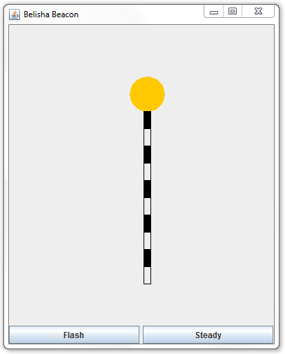

Your solutions should be your own unaided work. You can make use of any of the programs from the CE152 lecture notes and the lab solutions. You may use any features from the Java JDK API including those not covered in CE152.
You must NOT use any third-party classes (e.g. classes that are not provided as part of the Java JDK download). If you use any other sources, you must clearly indicate this as comments in the program, and the extent of the reference must be clearly indicated. For more information, please see the University pages on plagiarism and the Academic Offences Procedures.
The assignment should be submitted via Faser. Your submission should comprise a single zip file containing the source code (i.e. the .java files) for all the classes that you have written as solutions to the assignment tasks. No other files should be included in the zip file.
The name of your zip file should include both your name and your registration number.
You will receive a mark of zero if you fail to submit your solutions by the deadline.
You will be required to demonstrate your solutions to the assignment tasks in Week 30 (i.e. shortly after the submission deadline), please see this webpage for further information.
You will receive a mark of zero if you fail to demonstrate your work at the allocated time.
The standard extenuating circumstances procedures will apply for those who - for circumstances beyond their control - are prevented from submitting work before the deadline or from attending the lab demonstration. Please see the Undergraduate Students' Handbook for the University policies regarding these matters.
This exercise is about writing methods which operate on two-dimensional arrays of integers. You can assume that these arrays are square – the number of rows and columns of the array are equal. You can also assume each of these arrays has at least one row and that all rows are non-empty. For testing, please use an array with four rows and four columns with the following elements:
3 -1 4 0 5 9 -2 6 5 3 7 -8 2 1 6 -2
Create a class Exercise1. In this class, write a method
public static int mainDiagonalElementSum(int[][] array)Given a square 2D array, the method should return the sum of its elements which are on the main diagonal. For example, if applied to the test array, the result should be 3+9+7+(-2) = 17. Write a method main() which applies mainDiagonalElementSum to the test array. Display the method result and check that it is correct.
In class Exercise1 write a method
public static int maxRowAbsSumValue(int[][] array)Given a square 2D array, the method should compute for each row the sum of the absolute values of the elements of that row. The method should return the maximum of these sums. For example, if applied to the test array, the method should return the value max (3+1+4+0, 5+9+2+6, 5+3+7+8, 2+1+6+2) = max (8,22,23,11) = 23. Add code to method main() which applies maxRowAbsSumValue to the test array. Display the method result and check that it is correct.
In class Exercise1 write a method
public static int maxColumnAbsSumValue(int[][] array)Given a square 2D array, the method should compute for each column the sum of the absolute values of the elements of that column. The method should return the maximum of these sums. For example, if applied to the test array, the method should return the value max (3+5+5+2, 1+9+3+1, 4+2+7+6, 0+6+8+2) = max (15,14,19,16) = 19. Add code to method main() which applies maxColumnAbsSumValue to the test array. Display the method result and check that it is correct.
This exercise is about writing programs for practicing complementation of 2 given numbers.
Write a class Exercise2 with a method
public static void partA()The method should feature a loop that runs 5 times. In each step of the loop, the program should:
Here is log from a sample program run:
Exercise 2A 10 % 18 = ? 10 Correct answer, Current score: 20, performance: 1/1 16 % 11 = ? 5 Correct answer, Current score: 40, performance: 2/2 16 % 17 = ? 1 Incorrect answer, Current score: 40, performance: 2/3 17 % 19 = ? 2 Incorrect answer, Current score: 40, performance: 2/4 12 % 16 = ? 12 Correct answer, Current score: 60, performance: 3/5 Finish.
In class Exercise2, add a main() method which invokes part. Test your program.
In class Exercise2, add a method
public static void partB()The program should implement a similar functionality as in Part A - it should repeatedly ask the user to compute the complementation of two randomly generated integers in the range from 10 to 20. There are a couple of differences:
Here is log from a sample program run:
Exercise 2B 18 % 12 = ? 6 Correct answer, Current score: 20, performance: 1/1 14 % 16 = ? a Invalid input 14 % 16 = ? 14 Correct answer, Current score: 40, performance: 2/2 20 % 4 = ? q Finish.
Change method Exercise2.main() so that it invokes partB. Test your program.
A narcissistic number refers to a 3-digit decimal number which is the sum of the cubes of their digits: (e.g. 1 ^ 3 + 5 ^ 3 + 3 ^ 3 = 153).
Write a class Exercise3 with a method
public static boolean isNarcissisticNumber(int number)The aim of the method is to judge a number which is a narcissistic number or not. If the input parameter is a narcissistic number, the method returns true, conversely, returns false.In class Exercise3, add a main() method which invokes isNarcissisticNumber. Test your program.
Write a class Exercise3 with a method
public static int sum()The aim of the method is to compute the sum of all the narcissistic numbers. Note that narcissistic number is a 3-digit decimal number.In class Exercise3, add a main() method which invokes sum. Test your program.
This exercise is about practicing programming about Java class and objects.
Create a class Vehicle that represents a means of transportation. The class Vehicle should have 2 fields, 2 constructors and other 4 member methods:
Fields:Then create a class Exercise4 with the following method:
public static void partA() {
Vehicle va = new Vehicle ();
Vehicle vb = new Vehicle ("car", 60.0);
vb.speedUp();
System.out.println(va.type + " " + va.speed);
System.out.println(vb.type + " " + vb.speed);
}
In class Exercise4, add a main() method which invokes partA. The output should be:
bicycle 20.0 car 120.0
In class Exercise4, write a method
public static void partB() {
String[] typeArray = {"car", "train", "plane", "bicycle",};
double[] speedArray = {60, 180, 1000, 20};
TreeSet vehicles = new TreeSet<>();
for(int i = 0; i < typeArray.length; i++) {
vehicles.add(new Vehicle(typeArray[i], speedArray[i]));
}
}
In class Exercise4, add code to method main() which invokes partB. The program output this ERROR: “Exception in thread "main" java.lang.ClassCastException: Vehicle cannot be cast to java.base/java.lang.Comparable”. Please explain why this error occurs and modify the class Vehicle to make the program run correctly.
This exercise involves writing a program to solve word search puzzles. For example, in the grid below:
eoksibaebl ropeneapop mbrflaoyrm gciarrnuna utmoryaply wnarmutnke ngrelcbene alytueruei fgrammarib tdcebykxka
it is possible to find the following word occurrences:
open: row 1, position 1 bear: column 5, position 0 rope: row 1, position 0 apply: row 4, position 5 apply: column 6, position 3 grammar: row 8, position 1 primary: column 2, position 1
Create a Java class WordFinder with code as below.
public class WordFinder {
public static final int N = 10;
public static char[][] grid = new char[N][N];
public static final String GRID_FILE = "data/grid.txt";
public static final String WORD_FILE = "data/words.txt";
public static void main(String[] args) throws FileNotFoundException {
initGrid();
printGrid();
// find();
}
}
Then download two files containing the grid and the words to search for:
You may have to amend the file paths in your program depending on where you save the files.
In class WordFinder, implement method initGrid. This method should store the contents of file grid.txt in the 2D char array grid declared as a static member of the class.
Next implement method printGrid() which should display the grid on the screen. You may want to separate characters by a blank in order to improve legibility.
Run the program and check that it inputs and displays the grid correctly.
In class WordFinder, implement method find(). This method should read words from file words.txt. For each word, it should search the grid for a horizontal (left-to-right) or vertical (downwards) occurrence. If the word is found in the grid, then it should display the details of the occurrence in a format such as below:
grammar: row 8, position 1
This task requires some material from Week 23.
For this task you should create a class called BelishaBeacon that provides a 2D graphical animation of the flashing orange lights that are used to mark the location of pedestrian crossings – often called "Belisha Beacons" (in honour of the Minister of Transport who introduced them).
When the class is run it should display a window similar to the following:

Initially the lamp should flash; that is, its colour should alternate between orange and light grey with a period of about half a second. When the Steady button is clicked the flashing should stop and the lamp remain permanently on (i.e. orange); when the Flash button is pressed, the lamp should resume flashing. Closing the window should terminate the program.
The drawing should be constructed from geometrical shapes displayed using Java2D. It should not display an image taken from a file.
| Exercise | Weighting | Criteria |
| 1A – 1C | 15% | 5 marks for each correct method. |
| 2A | 9% | 3 marks for a loop posing 5 complementation problems. 2 marks for generating random numbers between 10 and 20 used in those problems. 2 marks for reading the user input and providing proper feedback if answer was right or wrong. 2 marks for displaying a proper score (number of correct answers, total number of answers) |
| 2B | 6% | 2 marks for posing an unlimited number of complementation problems. 2 marks for proper handling of "q" input. 2 marks for proper handling of invalid input. |
| 3A | 10% | 10 marks for correct implementation of the method. |
| 3B | 5% | 5 marks for correct implementation of the method. |
| 4A | 10% | As for class Vehicle, 2 marks for a class definition with suitable fields, 2 marks for two correct constructors, 4 marks for correct implementation of other four member methods. As for class Exercise5, 2 marks for the correct invocation of the class Vehicle. |
| 4B | 5% | 2 marks for the correct explanation of the error. 3 marks for correctly modifying the program. |
| 5A | 5% | 3 marks for proper reading of grid from file. 2 marks for display of grid in console. |
| 5B | 15% | 5 marks for finding all forward occurrences of words. 5 marks for finding all downward occurrences of words. 2 marks for proper handling of multiple occurrences of words. 3 marks for proper reporting of details of occurrences. |
| 6 | 20% | 10 marks will be awarded for a solution that correctly displays a window with a frame that shows a suitable drawing. 10 marks will be awarded for a correct implementation of the two buttons. Partial marks may be given if the drawing is incomplete or if one of the buttons has not been implemented. |